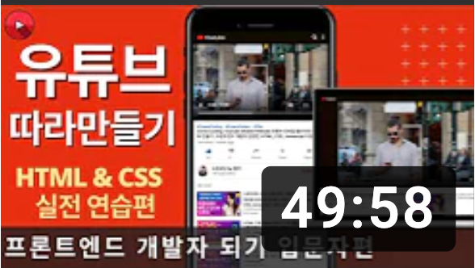

YouTube
#DreamCoding
#DreamCoders
#Ellie
Clone Coding: YouTube Mobile Website 유튜브 모바일 웹 사이트 따라 만들기 | 프론트엔드 개발자 입문편: HTML, CSS, Javascript 드림 코딩과 함께하는 프론트엔드 실전 입문편
1M Views 1 month ago
1K
0
Share
Save
Report
드림코딩 by 엘리
1M Subsribers
subscribe
Up Next

Clone Coding: YouTube Mobile Website 유튜브 모바일 웹 사이트 따라 만들기 | 프론트엔드 개발자 입문편: HTML, CSS, Javascript 드림 코딩과 함께하는 프론트엔드 실전 입문편
드림코딩 by 엘리
1M views
Clone Coding: YouTube Mobile Website 유튜브 모바일 웹 사이트 따라 만들기 | 프론트엔드 개발자 입문편: HTML, CSS, Javascript 드림 코딩과 함께하는 프론트엔드 실전 입문편
드림코딩 by 엘리
1M views
Clone Coding: YouTube Mobile Website 유튜브 모바일 웹 사이트 따라 만들기 | 프론트엔드 개발자 입문편: HTML, CSS, Javascript 드림 코딩과 함께하는 프론트엔드 실전 입문편
드림코딩 by 엘리
1M views